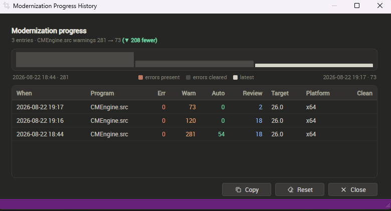

Modernization Progress
Each Check is one round of the cycle, and while you work it can be hard to see how much progress you have made. DFRefactor records every round, so you can see the numbers go down instead of trying to remember them.
You do not need to turn anything on. Each analysis adds one entry to a file for the workspace, and the dashboard reads it.
The readout on the dashboard
The guided card shows Modernization progress: the numbers of warnings, errors, auto-fix and review findings in the latest round, the program it checked, and when. Next to each number, a small figure shows the change since the previous round of the same series: teal when it went down, coral when it went up. Cycle N is the number of rounds recorded so far. Click it to open the history.
The history

Modernization Progress History first shows a summary of the current series: the number of entries, and the number of warnings in the first round and in the latest round, with the difference. In the picture above, three Checks reduced one workspace from 281 warnings to 73, and the number of auto-fixable findings from 54 to zero. This is what it looks like when DFRefactor has done all it can.
Below the summary, a small bar chart shows the last 24 rounds of that series. The height of each bar is the number of warnings, compared with the highest number in the series. The colour shows whether the round still had errors: coral when it had errors, muted when it had none, and pale for the latest round. With only one round, no chart is shown, because one value does not show a trend.
The table lists every round, the newest first:
- When, Program — the date and time, and the series.
- Err, Warn — what the compiler reported. For an Analyze Source round, Warn is the number of findings and Err is always zero.
- Auto, Review — the findings that the Analyzer can fix automatically, and the ones that it can fix but that you should check.
- Target — the DataFlex version you were modernizing to at the time.
- Platform — x64 or x86, the platform the program was compiled for. Empty for an Analyze Source round.
- Clean — a check mark when that round found no errors and nothing that can be fixed. This is calculated from the row and not stored, so it is also shown for rounds recorded before the column was added.
Series are kept separate
Each round is recorded under what was checked. A Check, and any compile and analysis, is recorded under the program that was compiled. This is so even though a Check also scans the source code, because the scan results are part of the same result. Only Analyze Source, when it is run on its own, is recorded under its own name.
The changes, the cycle numbers and the bar chart only compare rounds within the same series, never across series. The number of scan findings and the number of compiler warnings are very different, so comparing them would show a decrease or an increase that did not really happen.
What is recorded
Analyzing again without changing anything does not add a row. An entry that is identical to the previous one (the same counts, program and platform) is not saved, so the history only shows rounds where something changed. A round that finds nothing is recorded, because reaching zero is the result you want to keep.
Restoring files with Undo Refactoring clears the current analysis, because it no longer matches the files, but the history is kept. Restoring some of the files does not undo the earlier rounds, and the next analysis records the increase correctly.
Copy and Reset
Copy copies the whole table to the clipboard as text separated by tabs, the oldest first, so that it shows the progress in order. Clean and Exhausted are written as words. You can paste it into an e-mail as a table, or into Excel as columns.
Reset clears this workspace's history and starts a new one. It cannot be undone, and it affects only the workspace you are in.
See Analyzer for where the counts come from, and How to use the Program for the complete cycle.